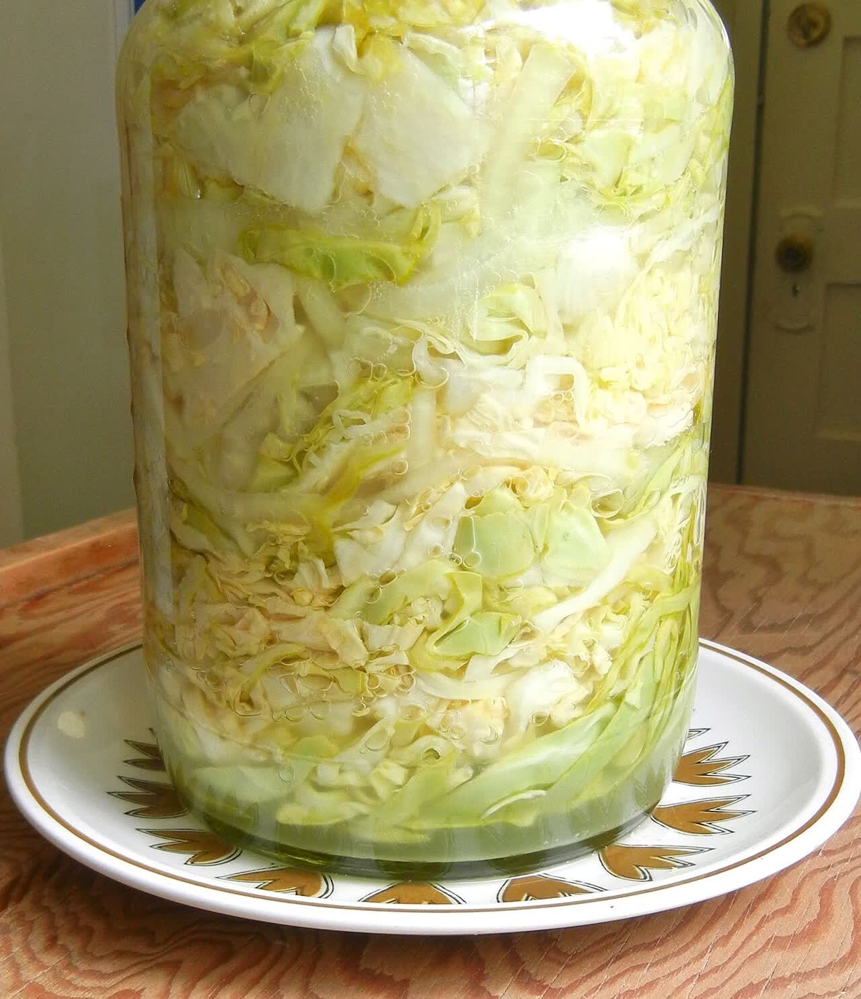

细胞呼吸的原理和应用（下）：无氧呼吸与细胞呼吸的应用
本期导读
细胞呼吸的原理和应用（下） · 判断与计算

视频原话 · 导读3 句
- 同学们好！这节课梳理人教版必修一第五章第三节的下半部分——无氧呼吸和细胞呼吸原理的应用。9.7s
- 高考常考根据气体变化判断呼吸方式、相关计算，以及影响因素和生产应用。8.0s
- 我们按七个考点梳理，每个考点都讲清楚怎么考、怎么做。5.6s
无氧呼吸的过程01#
场所：两个阶段都在细胞质基质
- 葡萄糖
- 第一阶段 →丙酮酸 ＋ [H]释放少量能量
- 第二阶段 →酒精 ＋ CO2不释放能量
- 葡萄糖
- 第一阶段 →丙酮酸 ＋ [H]释放少量能量
- 第二阶段 →乳酸不释放能量
易错
无氧呼吸只在第一阶段释放少量能量；大部分能量仍储存在酒精或乳酸中
视频原话4 句
- 考点一，无氧呼吸。无氧呼吸的两个阶段都在细胞质基质中进行。6.7s
- 第一阶段与有氧呼吸的第一阶段完全相同：葡萄糖分解为丙酮酸和少量[H]，释放少量能量。9.5s
- 第二阶段：丙酮酸在不同酶的催化下，分解成酒精和CO2，或者转化成乳酸；这一阶段不释放能量。10.1s
- 易错：无氧呼吸只在第一阶段释放少量能量，大部分能量还储存在酒精或乳酸中。8.3s
酒精发酵与乳酸发酵02#
产生酒精
C6H12O6酶⟶2C2H5OH + 2CO2 ＋ 少量能量
实例：酵母菌、多数植物细胞（如水淹的根）
产生乳酸
C6H12O6酶⟶2C3H6O3 ＋ 少量能量
实例：乳酸菌、人和动物骨骼肌、马铃薯块茎、甜菜块根、玉米胚
提示
能量少：1 mol 葡萄糖只有约 61.08 kJ 储存在 ATP 中
易错
人体骨骼肌无氧呼吸产生乳酸，不产生 CO2
视频原话4 句
- 考点二，两种无氧呼吸。产生酒精的无氧呼吸：葡萄糖分解为酒精和CO2，如酵母菌、多数植物细胞。10.7s
- 产生乳酸的无氧呼吸：葡萄糖分解为乳酸，如乳酸菌、人和动物的骨骼肌细胞，以及马铃薯块茎、甜菜块根、玉米胚。11.3s
- 无氧呼吸释放的能量少，1 mol葡萄糖只有约61.08 kJ的能量储存在ATP中。8.2s
- 易错：人体骨骼肌无氧呼吸产生乳酸，不产生CO2，所以人体产生的CO2只来自有氧呼吸。10.1s
有氧与无氧的比较03#
| 比较项目 | 有氧呼吸 | 无氧呼吸 |
|---|---|---|
| 条件 | 需要 O2 | 不需要 O2 |
| 场所 | 细胞质基质、线粒体 | 细胞质基质 |
| 产物 | CO2、H2O | 酒精和 CO2，或乳酸 |
| 能量 | 大量 | 少量 |
| 联系 | 第一阶段完全相同 | 第一阶段完全相同 |
解题方法
实质相同：分解有机物，释放能量；区别看 O2、场所、产物和能量
视频原话4 句
- 考点三，有氧呼吸与无氧呼吸的比较。条件：有氧呼吸需要O2，无氧呼吸不需要O2。9.0s
- 场所：有氧呼吸在细胞质基质和线粒体；无氧呼吸只在细胞质基质。7.3s
- 产物：有氧呼吸是CO2和水；无氧呼吸是酒精和CO2，或者乳酸。能量：有氧大量，无氧少量。11.2s
- 解题方法：两者第一阶段完全相同，实质都是分解有机物、释放能量。7.0s
判断呼吸方式04#
| 气体变化 | 呼吸方式 |
|---|---|
| 只释放 CO2，不吸收 O2 | 只进行产酒精的无氧呼吸 |
| CO2 释放量 ＝ O2 吸收量 | 只有氧呼吸，或有氧呼吸 ＋ 产乳酸的无氧呼吸 |
| CO2 释放量 ＞ O2 吸收量 | 有氧呼吸 ＋ 产酒精的无氧呼吸 |
| 不吸收 O2，也不释放 CO2 | 只进行产乳酸的无氧呼吸，或细胞已死亡 |
易错
底物是脂肪时，O2 消耗量 ＞ CO2 释放量，不能直接套用
试一试：先比较 CO₂ 释放量与 O₂ 吸收量，再判断呼吸方式。
- 1酵母菌在无氧条件下培养，检测到释放 CO₂ 但不吸收 O₂只产酒精的无氧呼吸：不耗 O₂ 却放出 CO₂，说明进行的是产酒精的发酵。
- 2人体骨骼肌细胞剧烈运动时，CO₂ 释放量等于 O₂ 吸收量有氧呼吸＋乳酸发酵：乳酸发酵不产生 CO₂，所以两者相等时仍可能有乳酸发酵。
- 3苹果密封储藏一周，测得 CO₂ 释放量大于 O₂ 吸收量有氧呼吸＋酒精发酵：多出来的 CO₂ 来自酒精发酵。
- 4马铃薯块茎在无氧条件下，既不吸收 O₂ 也不释放 CO₂只产乳酸的无氧呼吸：乳酸发酵既不耗 O₂ 也不放 CO₂。
视频原话5 句
- 考点四，根据气体变化判断呼吸方式，以葡萄糖为底物。只释放CO2、不吸收O2：只进行产酒精的无氧呼吸。11.7s
- CO2释放量等于O2吸收量：只进行有氧呼吸，或有氧呼吸和产乳酸的无氧呼吸同时进行。9.4s
- CO2释放量大于O2吸收量：有氧呼吸和产酒精的无氧呼吸同时进行。7.7s
- 既不吸收O2，也不释放CO2：只进行产乳酸的无氧呼吸，或者细胞已经死亡。8.0s
- 易错：以脂肪为底物时，O2消耗量大于CO2释放量，不能套用上面的结论。8.0s
呼吸作用的计算05#
- 1有氧呼吸葡萄糖 : O2 : CO2 ＝ 1 : 6 : 6
- 2产酒精的无氧呼吸葡萄糖 : CO2 ＝ 1 : 2，不消耗 O2
例：吸收 O2 6 mol，释放 CO2 10 mol
有氧：O2 6 → 葡萄糖 1 mol；无氧：CO2 10 − 6 ＝ 4 → 葡萄糖 2 mol
解题方法
先用 O2 吸收量算有氧呼吸，再用剩下的 CO2算无氧呼吸
视频原话4 句
- 考点五，相关计算。有氧呼吸：1分子葡萄糖消耗6分子O2，产生6分子CO2。9.2s
- 产酒精的无氧呼吸：1分子葡萄糖产生2分子CO2，不消耗O2。7.1s
- 例：酵母菌吸收O2 6 mol，释放CO2 10 mol：有氧呼吸消耗葡萄糖1 mol；无氧呼吸产生CO2 4 mol，消耗葡萄糖2 mol。12.8s
- 解题方法：先用O2吸收量算出有氧呼吸，再用剩下的CO2算无氧呼吸。7.9s
影响细胞呼吸因素06#
- 温度：影响呼吸酶的活性
- O2 为 0：只进行无氧呼吸；O2 增加，无氧呼吸受抑制
- 自由水多 → 呼吸旺盛；CO2 浓度高 → 抑制呼吸
考法
储存果蔬：低温、低氧、适宜湿度；储存种子：低温、低氧、干燥
视频原话4 句
- 考点六，影响细胞呼吸的因素。温度主要通过影响呼吸酶的活性起作用。7.1s
- O2浓度：为0时只进行无氧呼吸；随O2浓度增大，无氧呼吸受抑制，有氧呼吸增强；CO2释放总量最少时，有机物消耗最少。13.2s
- 水：一定范围内，自由水含量越高，细胞呼吸越旺盛；CO2浓度升高，会抑制细胞呼吸。9.4s
- 考法：储存果蔬选低温、低氧、适宜湿度；储存种子选低温、低氧、干燥。7.8s
细胞呼吸原理应用07#
- 1包扎伤口透气的消毒纱布 → 抑制破伤风芽孢杆菌等厌氧菌繁殖
- 2酿酒先通气（酵母菌有氧呼吸、繁殖），后密封（无氧呼吸产酒精）
- 3松土促进根的有氧呼吸，利于吸收无机盐
- 4有氧运动慢跑等，避免肌细胞无氧呼吸产生大量乳酸
易错
稻田定期排水：防止根无氧呼吸产生酒精导致烂根
视频原话4 句
- 考点七，细胞呼吸原理的应用。包扎伤口选用透气的消毒纱布，抑制破伤风芽孢杆菌等厌氧菌的繁殖。10.2s
- 酿酒先通气、后密封：先让酵母菌有氧呼吸、大量繁殖，再无氧呼吸、产生酒精。8.3s
- 土壤板结要及时松土透气，促进根的有氧呼吸，利于吸收无机盐；提倡慢跑等有氧运动，避免肌细胞产生大量乳酸。11.3s
- 易错：稻田要定期排水，防止根进行无氧呼吸产生酒精，导致烂根。7.2s
易错速查✓
先自己判断，再点按钮查看对错与解析。
- 1无氧呼吸两个阶段都释放少量能量说法错误：只有第一阶段释放能量
- 2人剧烈运动时，无氧呼吸也产生CO2说法错误：人无氧呼吸只产生乳酸
- 3马铃薯块茎无氧呼吸的产物是乳酸说法正确。
- 4CO2释放量等于O2吸收量时只进行有氧呼吸说法错误：也可能同时进行产乳酸的无氧呼吸
- 5储存种子应选择低温、低氧、干燥说法正确。
- 6用透气纱布包扎是为了让伤口细胞有氧呼吸说法错误：是为了抑制厌氧菌繁殖
先用氧气算有氧，剩下的二氧化碳算无氧！
视频原话 · 易错速查5 句
- 最后，用六道判断题检验一下。3.6s
- 判断一？错，只有第一阶段释放能量。判断二？错，人无氧呼吸只产生乳酸。9.0s
- 判断三？对。判断四？错，也可能同时进行产乳酸的无氧呼吸。7.9s
- 判断五？对。判断六？错，是为了抑制厌氧菌。6.3s
- 七个考点串成一条线：先用O2算有氧，剩下的CO2算无氧。我们下期再见！8.3s
图片来源
图片来源：Wikimedia Commons —— Bdubay《Sauerkraut Jar》CC BY-SA 3.0（已裁切）
Photo: Bdubay, CC BY-SA 3.0